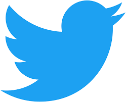

Depuis 2017 je suis trésorier d’une association de supporters de la structure eSport Team Vitality. Nous avons organisé plusieurs déplacements en Europe (Paris, Tours, Valence, Berlin...) dans le but d'amener le plus de jeunes supporter leur équipe préférée. Vous pouvez retrouver notre compte Twitter juste ici : 
Je suis également passionné par le sport (le Football et le Volley-Ball surtout) ainsi que par les Jeux Vidéo depuis tout petit